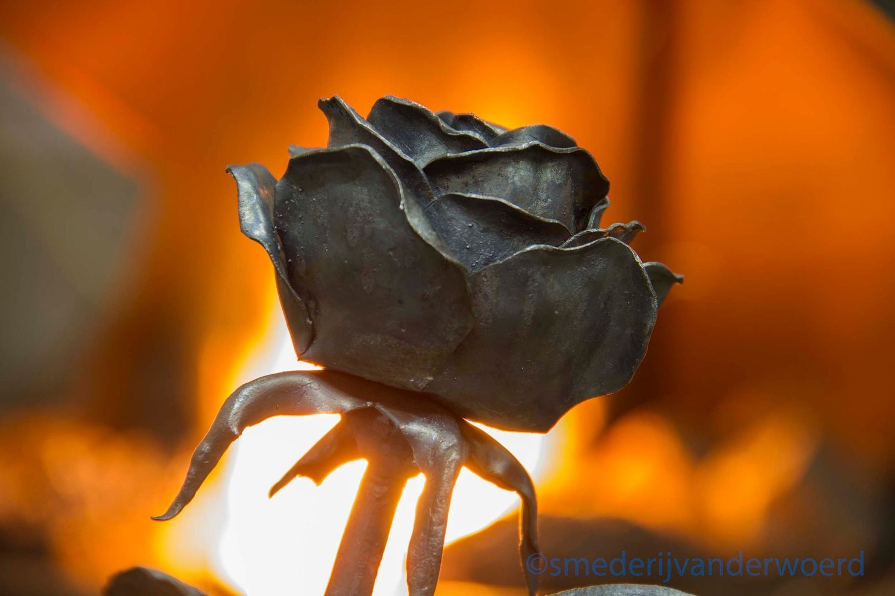
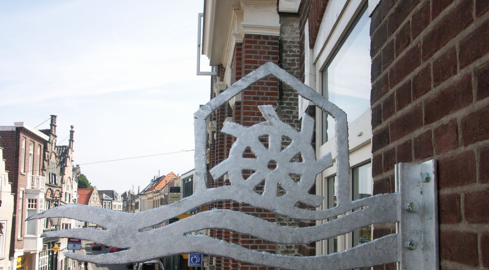

Over ons
Specialist in metaal
Wij zijn gespecialiseerd in metaalbewerking zoals staalconstructies, plaatwerk en interieurwerk. We maken maatwerk voor binnen en buiten, zoals stalen deuren en puien voor winkels en woningen.
Ook onderhoud, fabricage, montage en laswerk op locatie. Wij hebben projecten gerealiseerd in heel Nederland en België.
- Lid van de Koninklijke Metaalunie
- Aangesloten bij het Nederlands gilde van kunstsmeden
- Actief sinds 1988

De watermeter
Naar een ontwerp van Eloi Korenman, gemaakt en geplaatst door Smederij van der Woerd.
